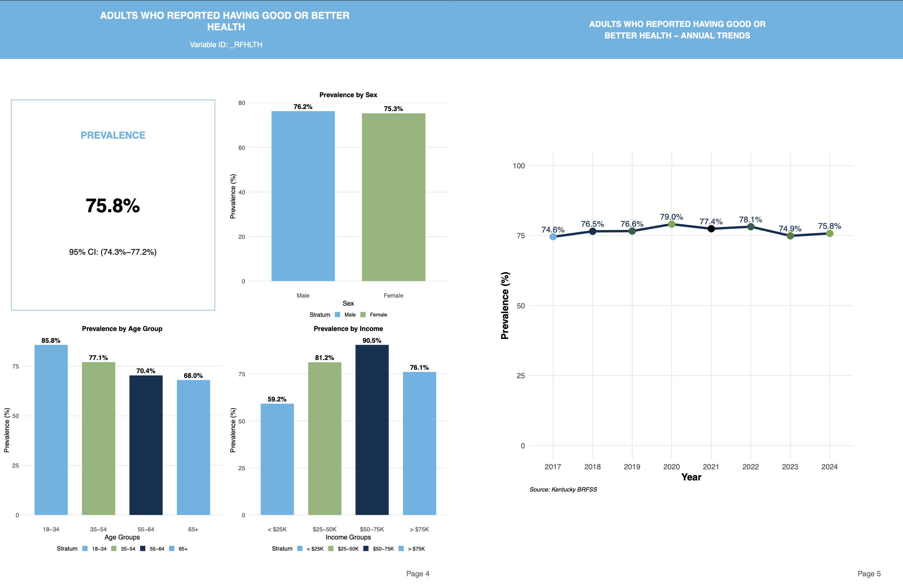
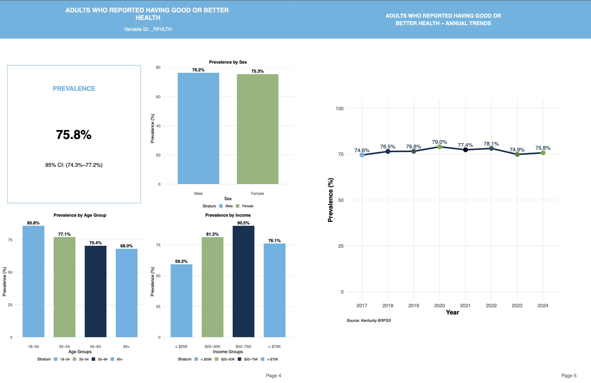

My Projects
BRFSS Dashboard
Atlas
Predicting Salamander Abundance
BRFSS Dashboard
While interning at the KDPH, I led the development of an R-shiny app to fill a department need. Due to the partial functionality of the current BRFSS dashboard from CDC, the dept needed a new shiny app for internal use. This app uses R shiny, ggplot2, and gt table (in addition to other packages) to take user input and dynamically populate the dashboard with an automatically downloaded PDF.
 

PDF Report
Atlas - Survival Analysis
While interning at the Kentucky Dept of Public Health, I worked under Dr. Adam Berrones to help develop the survival analysis portion of an R shiny app examining neurological cancer tumors. During this project, I developed a pipeline to take user input and dynamically generate Kaplan-Meier survival curves and Cox Proportional Hazard models to predict survival outcomes. I also implemented log rank test for pairwise comparisons between groups within the curves themselves. This project can be found here under the survival tab.

Predicting Salamander Abundance based on Ecological Factors in Southeast Kentucky
While studying at Union Commonwealth University for Biology, I proposed and conducted a novel research project examining the effects of ecological landscapes on salamander abundance in southeast Kentucky. This project was conducted through the ACA and Ledford's Scholar. A video presentation of this project can be found here.